| |
Taste of Boysenberry Festival 2021
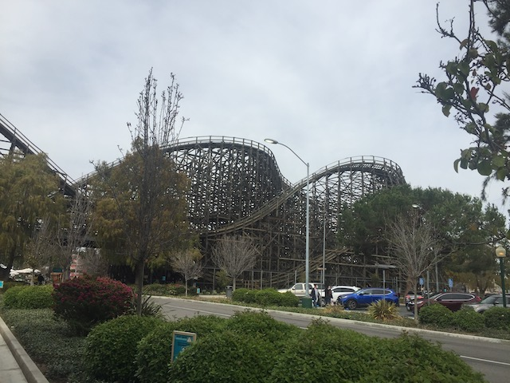
All right. So....we're still in lockdown despite the fact there's now a vaccine. However, this'll only be short-lived as the parks opened up in April (Seperate update for this, but it is SO GOOD to be riding coasters in California again). However, for the final month of lockdown, Knotts decided to go ahead with their annual Boysenberry Festival. Except....as a stand alone food festival instead of as a theme park. So, here we are.
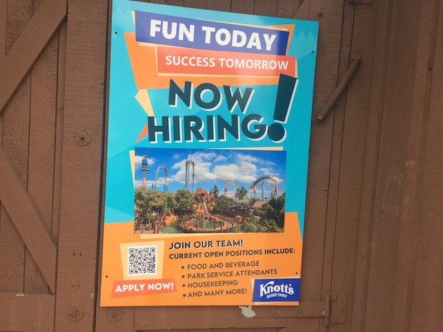
I know a certain someone who needs his Knotts job back (and got it). Also, I REALLY hope Knotts starts following suit with other Cedar Fair parks in paying a living wage (And this goes for ALL Cedar Fair parks not already doing so. Not just Knotts).
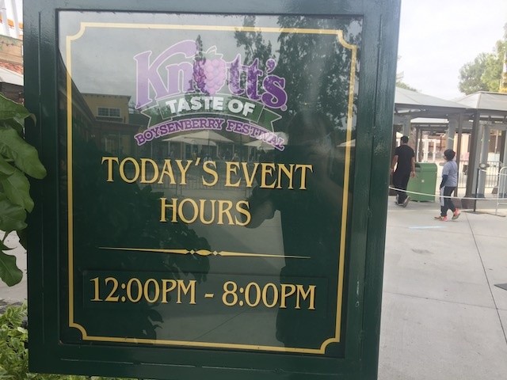
OK. One minor COVID-rule annoyance. This isn't just theme parks doing this, this is damn near all businesses. Shorter hours. Doesn't matter now as we would've left when we did anyways. But I really hope with the pandemic winding down, we start to see businesses return to pre-COVID hours.
 So normally, we would not be doing a whole update just for a Food Festival. However, it's pretty clear that this is only "a food festival" due to legal reasons, and that this is essentially the Boysenberry Festival, just without any rides and complying with California law. And we ALWAYS do a Boysenberry Festival Update. So....yeah. Let's do this thing!
So normally, we would not be doing a whole update just for a Food Festival. However, it's pretty clear that this is only "a food festival" due to legal reasons, and that this is essentially the Boysenberry Festival, just without any rides and complying with California law. And we ALWAYS do a Boysenberry Festival Update. So....yeah. Let's do this thing!
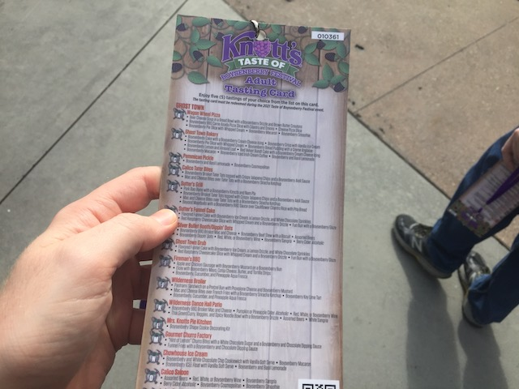
Excited to try a lot of these items. =P
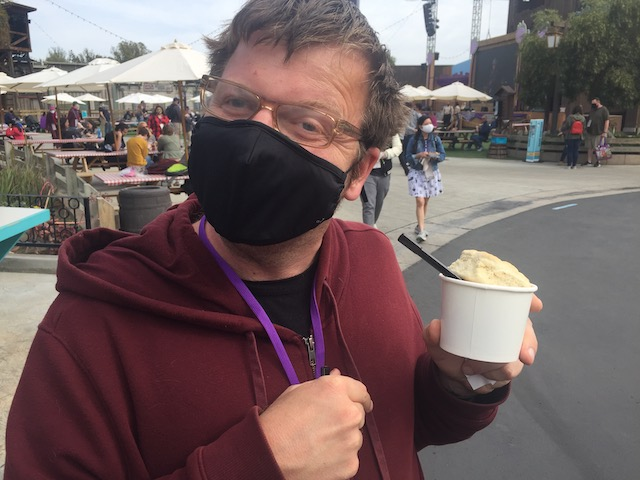
All right. Item #1. Boysenberry Beef Stew with a biscuit. It was good. Not amazing, but still tasty.
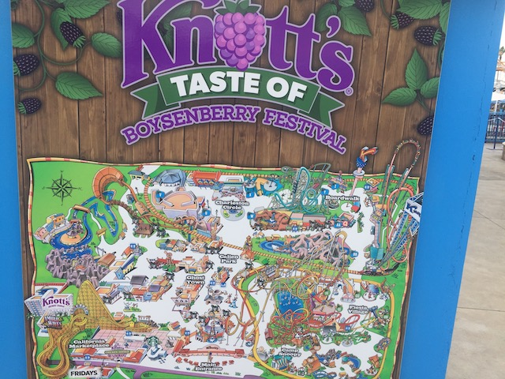
No officer! This is not a theme park! I swear! All those roller coasters on the map? Decorations! Just giant decorations!
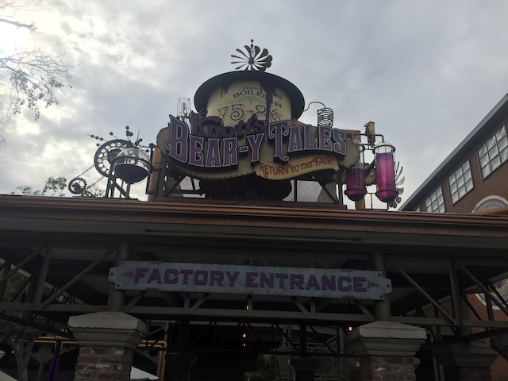
All right. So Knotts Beary Tales is coming to Knotts this year. That's something to look foreward to (I've actually already done it, but I'm saving my commentary on it for a different update).
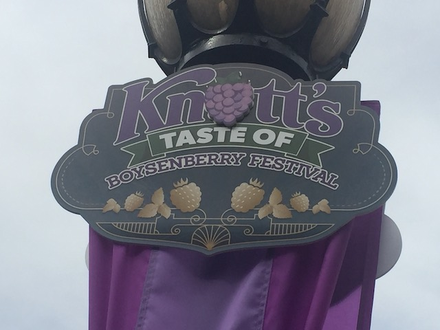
So 2020 never had a Boysenberry Festival since.....COVID became a global pandemic RIGHT as it was about to start. So with no Boysenberry Festival, let's make up for it by being the most kickass Boysenberry Festival ever (at least, the most kickass it can be without Xcelerator and the other coasters)!
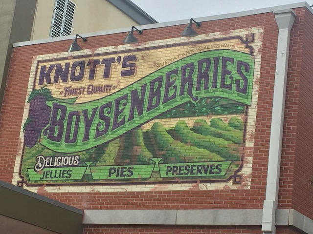
Yeah. Knotts Jelly may be good and all, but let's be real. It's not as good as Smuckers. ;)
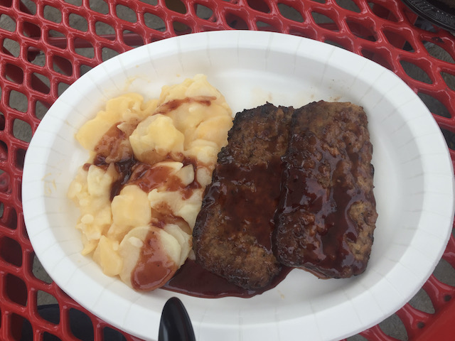
Item #2. Boysenberry Meatloaf. This was really good. If you liked the Boysenberry Meatballs, this was that. Only in loaf form. Not a big fan of the potatoes. But it was still very good overall.
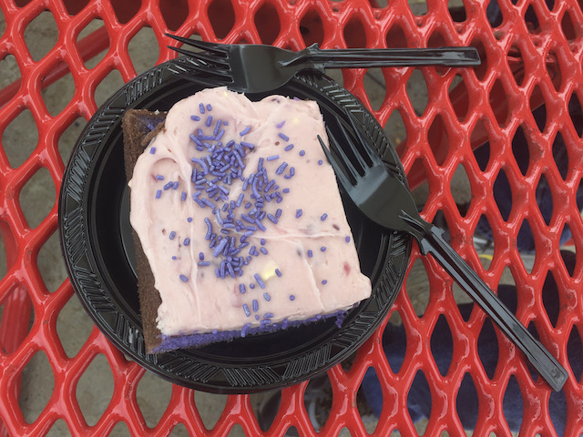
Next up, Item #3. Boysenberry Cake with Boysenberry Cream Cheese Icing. Do you like cake? If so, then you’ll love this. Very soft spongy cake. Icing is really good. Big thumbs up.
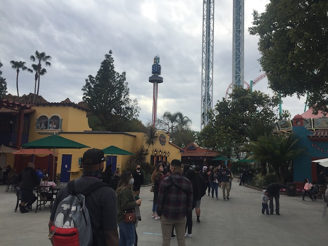
Ugh. What the hell is this giant line for?
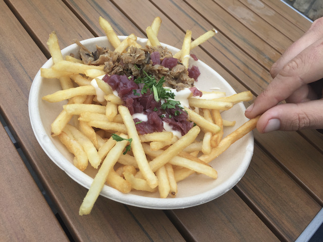
Item #4. Philly Cheesesteak Fries with Boysenberry Onions. Another really good food. Not exactly a clean food to eat. But...worth it. Totally worth it.
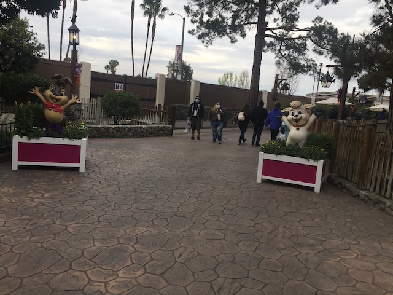
Oh yeah. I keep forgetting that this also qualifies as an Easter Festival for Knotts.
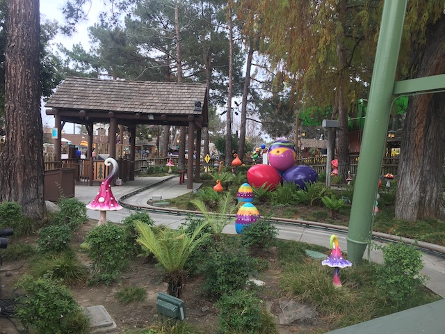
Can I take the giant easter eggs? Are they included on the Tasting Card?
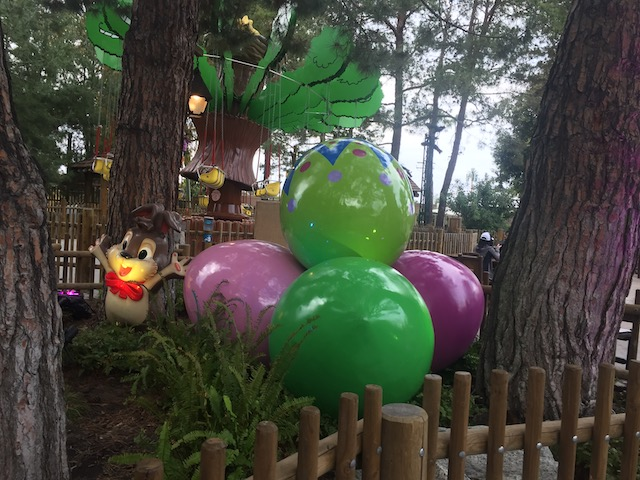
I'd love to see the chocolate and other goodies inside those easter eggs.
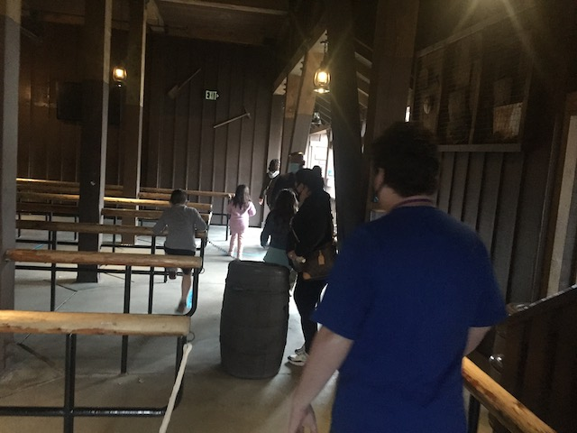
Hmm. This food line is taking us through the Ghostrider building. I thought all indoor lines were bad thanks to COVID. ;)
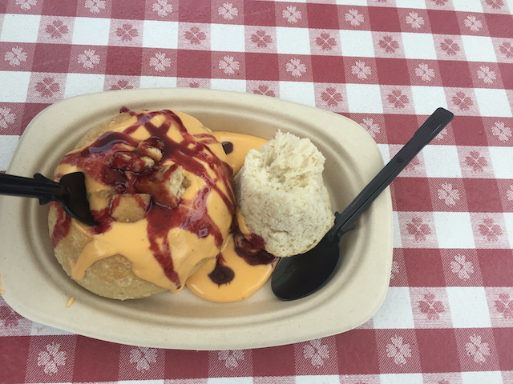
All right. Back to the food. Item #5. Boysenberry Beer Cheese Soup in a Bread Bowl. This was...good. But...the boysenberry didn’t mix well with it. I love Beer Cheese Soup, and...this was delicious. But...it would’ve been better as just a normal Beer Cheese Soup.
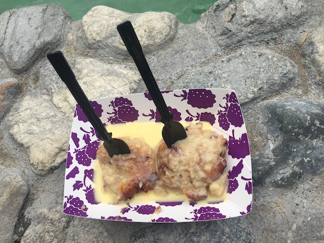
Item #6. Boysenberry Bread Pudding. Favorite thing at the festival this year. This was so good! Soft, warm, spongy, moist, just...Mmmm! Loved it so much! =)
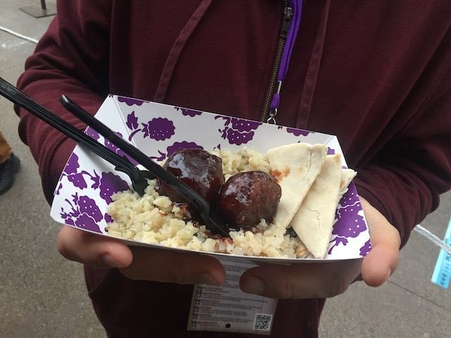
Item #7. Boysenberry BBQ Beyond Meatballs. Hey look SFMM! Knotts has Beyond Meat for their fake meat! It’s really good. And I love the Boysenberry BBQ sauce.
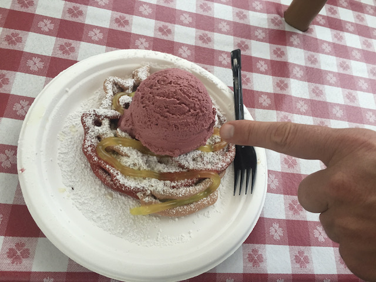
For our final dessert, we have Item #8. Boysenberry Funnel Cake with Lemon Drizzle and Boysenberry Ice Cream. Very good. It’s your standard funnel cake (the boysenberry in the funnel cake isn't noticable at all) with boysenberry ice cream on top. Not amazing, but still very tasty.
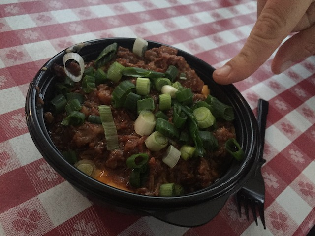
Item #9. Boysenberry Brisket Mac & Cheese. YUM!!! This thing was really amazing! I might even like this more than the original Boysenberry Habanero Mac & Cheese.
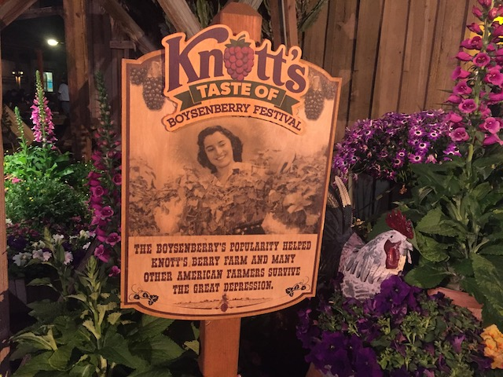
Hey all you peasants bitching about losing your job due to the COVID Recession! Just invent a new berry and turn your farm into a theme park! That's what we did! Why can't you do that!?
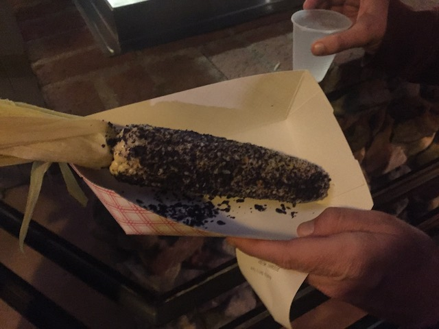
And finally, we conclude the Boysenberry Festival with Item #10. Boysenberry Corn. This was a let down. I was NOT impressed with this. Easily my least favorite item. Also, I'm pretty sure this was at the very first Boysenberry Festival. Come on Knotts. If you're gonna bring something back from the 2015 Boysenberry Festival, bring back the Boysenberry Trifle.
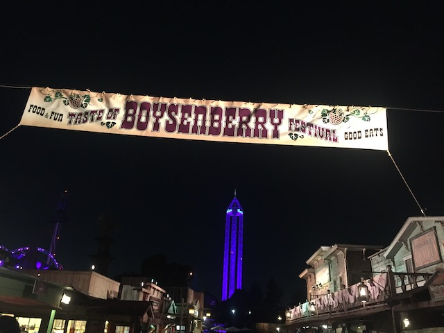
Man, it's been so long since I've been here at night. I missed seeing everything all lit up.
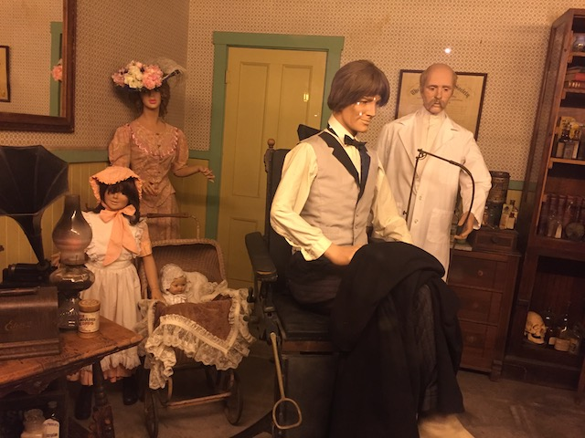
Are you sure I'm not just in Pioneer Village @ Lagoon?
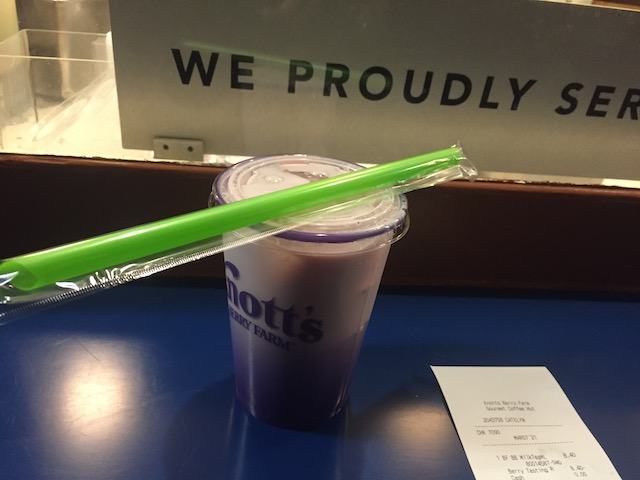
I think they made a mistake on my card cause I got an extra item. So....let's have some Boysenberry Boba. Except this is different from other years, as this years version had exploding boba! Sweet!
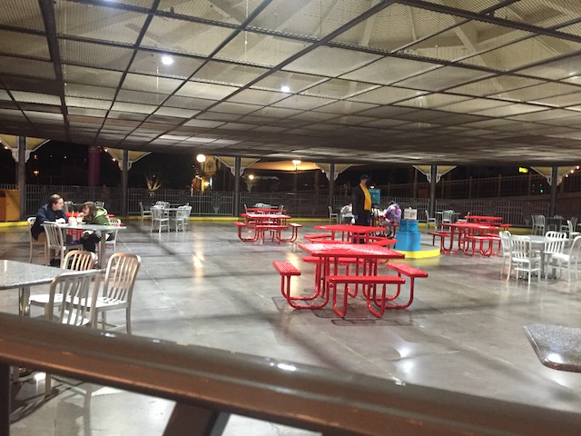
Those bumper cars are so terrible that they might as well stay converted as a dining area, even when the rides reopen. >=)
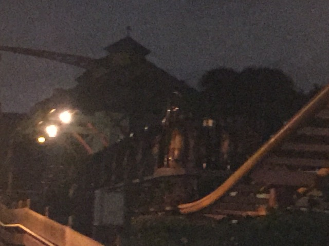
Don't be sad. The pandemic will soon be over. And before you know it, you'll be back on THE BEST RIDE EVER!!!
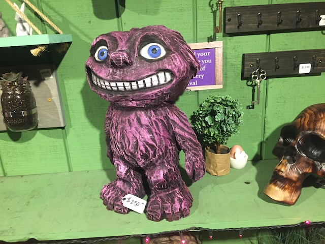
And that's this years Boysenberry Festival (Taste of Boysenberry Festival). It was really good. So many good foods (I'm looking at you Mac & Cheese and Bread Pudding) and it's just good to be back at the park. Yeah, it sucks that the rides are all still closed. But don't worry. They'll be back soon (The rides at other parks *cough*SFMM*cough* are coming back in April). So next year, we should be able to have a proper Boysenberry Festival. Come on Knotts! Let's top 2019!
Home
|